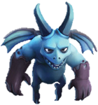
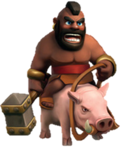
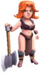
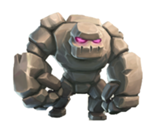
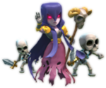
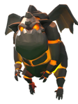

|  |
Esbirro |
El esbirro es una criatura voladora con un par de cuernos sobre su cabeza, y más atrás lleva un par
de pequeñas alas.
En los niveles 1 y 2, es azul y sus garras son de un color gris oscuro.
En los niveles 3 y 4, se vuelve de un tono entre azul y morado.
En el nivel 5, es gris.
En el nivel 6, es de un color morado oscuro, excepto las alas y la punta de los cuernos, que pasan a ser de color rosa. |
DEFENSIVAS
- En el Castillo del Clan, funcionan cómo una arquera, pero tienen la ventaja que no pueden ser atacados por tropas terrestres que atacan cuerpo a cuerpo, además de ser mucho más veloces.
|
OFENSIVA
- Es mejor deshacerse antes de los cohetes de defensa, torres de arqueras y torres de magos, pues no poseen mucha vida, y éstos suponen un riesgo para los esbirros.
- Son muy útiles para destruir cañones, morteros e incluso edificios protegidos por éstos.
- Gracias a su velocidad, si no son atacados por edificios como cohetes de defensa, pueden destruir todos los edificios de la aldea, especialmente si se despliegan en una gran horda.
|
|  |
Montapuerco |
El montapuerco es un hombre rudo y fuerte que empuña un martillo gris adornado con oro, usando en
sus muñecas unas pulseras doradas.
Viste un cinturón rojo, no lleva camisa y lleva un grueso arete de oro en la oreja derecha, además que éste hombre es jinete de un jabalí.
Su cabello es estilo mohawk.
En los niveles 3 y 4, el martillo es mucho más grande.
En el nivel 5, su cabello se vuelve anaranjado. |
DEFENSIVAS
- La ventaja de los montapuercos de saltar muros se vuelve innecesaria cuando se usa para defender una aldea, pues todas las tropas que salen del Castillo del Clan pueden saltar muros. Su única ventaja es que tiene mucha vida e inflige mucho daño, pero no sería muy útil si hay tropas aéreas.
|
OFENSIVAS
- La principal característica del montapuerco es que puede saltar muros enemigos, además que cuenta con muchos puntos de vida y un gran ataque, por lo que es buena idea utilizar montapuercos, además que no demoran mucho tiempo en ser entrenados y no ocupan mucho espacio.
- Si se lanzan en grupos pueden aumentar la probabilidad de conseguir una victoria, pues son resistentes y fuertes.
- Hay que tener cuidado con las bombas gigantes, que infligen mucho daño a los montapuercos. Es mejor activar las bombas gigantes utilizando otras tropas cómo bárbaros, y así dar un paso seguro al montapuercos.
|
|  |
Valkiria |
Las valquirias son fieras guerreras con un cabello semi-largo color anaranjado-rojizo.
Visten un largo taparrabos y una camisa corta, además de unas botas un poco largas.
Se arma con un hacha de doble filo que sostiene con ambas manos.
En los niveles 1 y 2, el hacha es plateada.
En los niveles 3 y 4, el hacha es de oro. |
DEFENSIVAS
- Las valquirias son tropas muy fuertes, aunque no poseen mucha vida. Pueden mantenerse seguras, a menos que la aldea sea atacada por tropas resistentes, como dragones o P.E.K.K.As. Tienen facilidad para eliminar tropas de la división 1 y división 2, aun cuando sea llevada lejos de la aldea y sea atacada por muchas tropas, pues inflige un daño de área.
|
OFENSIVAS
- Si la aldea atacada tiene un Rey Bárbaro y/o Reina Arquera, es mejor dejar que las valquirias se encarguen de ellos, pues hacen mucho daño a los Héroes.
- También pueden ser útiles contra las tropas terrestres del Castillo del Clan, pues su daño de salpicadura puede eliminarlos fácilmente. Lo mismo puede hacerse con edificios defensivos peligrosos cómo morteros y torres de magos.
|
|  |
Gólem |
El golem es una criatura grande de ojos morados hecha de rocas
En los niveles 1 y 2, las rocas que lo forman son café grisáceas.
En los niveles 3 y 4, las rocas que lo forman son gris oscuro.
En el nivel 5, las rocas que lo forman son de un color púrpura grisáceo con algunos picos que asemejan ser de cristal. |
DEFENSIVAS
- Son muy eficaces defendiendo, pues son muy fuertes y al ser destruidos liberan dos golemitas, pero tienen la desventaja de ser lentos y únicamente poder estar en un Castillo del Clan de nivel 5, ya que ocupan 30 espacios.
|
OFENSIVAS
- Cuando se destruye al gólem, además de hacer un daño de salpicadura por una explosión, libera 2 golemitas, que pueden continuar atacando aunque con menos fuerza y vida, pero aún así siguen siendo muy efectivos para distraer a las defensas.
- A los gólems no les afectan las trampas de salto, aunque a las golemitas si. Los golems pueden usarse para desactivarlas.
- Si dos o más gólems se lanzan contra una Torre Infierno, pueden destruirla rápidamente si está configurada para atacar a varios objetivos.
- Al igual que los gigantes y P.E.K.K.As, los gólems cuentan con muchos puntos de vida, por lo que pueden usarse para distraer edificios defensivos y así proteger a unidades con menos vida.
|
|  |
Bruja |
Las brujas son mujeres con un vestido desgarrado, con unas manos esqueléticas.
Lleva una cinta en la cintura y unas hombreras doradas, y su cabello es morado mientras que sus ojos son de un profundo color rosa.
Su rostro se asemeja al de una arquera.
En una mano lleva un bastón que tiene una calavera con cornamenta dorada. |
DEFENSIVAS
- Si se tienen brujas en el Castillo del Clan, es recomendable colocar el Castillo del Clan protegido por muros. Las brujas son una buena unidad para defender la aldea de un ataque, pues son apoyadas por esqueletos e infligen daño a unidades terrestres y aéreas.
|
OFENSIVAS
- A causa que tiene pocos puntos de vida, se recomienda usarla detrás de una tropa que pueda protegerla de los edificios defensivos. Las brujas tienen el mismo rango que una arquera o un mago, pero también pueden distraer a los edificios defensivos lanzando esqueletos, acto para el cual demoran seis segundos.
- Es recomendable desplegar varios gigantes para distraer, con algunos rompemuros después para destruir los muros. Luego, pueden añadirse de una a tres brujas, y éstas harán aparecer esqueletos para dar apoyo a los gigantes.
|
|  |
Sabueso de Lava |
Los sabuesos de lava son criaturas hechas de rocas oscuras que están recubiertas de lava
Tiene grandes pinchos de piedra naciendo de su espalda con unas grandes alas también hechas de roca.
En los niveles 1 y 2, tiene varias líneas de lava en su cuerpo.
En el nivel 3, brotan unas marcas redondas de lava que van desde la frente hasta la espalda. |
DEFENSIVAS
- Pueden estar en un Castillo del Clan a partir del nivel 5, pues ocupan 30 espacios, pero pueden ser ventajosos ya que son tropas aéreas, y si llegan a ser destruidos, hacen aparecer unos cachorros de lava.
|
OFENSIVAS
- Los sabuesos de lava tienen por prioridad atacar primero las defensas aéreas, por lo que pueden servir para proteger otras tropas aéreas.
- Cuando es destruído, genera una pequeña explosión y hace aparecer unos cachorros de lava, que son más pequeños y débiles, pero igual pueden causar daño.
|